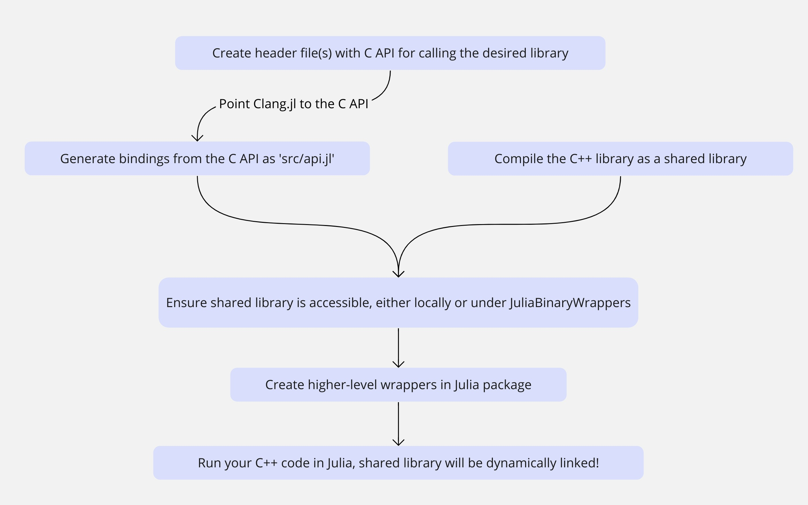

Use Ginkgo in Julia
How can we use a C++ library in our Julia code? In order to do this, we need to firstly create header file(s) that contain(s) C API. Then we can use Clang.jl to generate low-level API from it. The remaining step would be to properly wrap these low-level API methods using a higher-level API, such that users in Julia community can use our newly created Julia wrapper package as if it was a native package. Following is a workflow diagram that illustrates the whole process.

In order to illustrate this workflow, we wrapped a C++ library called simpson that implements a Simpson integration scheme into a Julia package called Simpson.jl. A short tutorial is provided in the README file.
Understanding how Julia functions are involved
We consider a function integrate() that performs numerical integration in our C++ library. Within the header file that contains the C API, the function declaration lies within braces of the language linkage specified with an extern "C" keyword. The use of this keyword disables name mangling for specified functions in C++, such that the client linker will be able to link using the C name as how you specified within the code.
extern "C" {
double integrate(const double a,
const double b,
const unsigned bins,
double (*function)(double));
// other methods...
}1. Analyzing Compiled C++ Shared Libraries
Let us suppose we have already compiled and linked our code into a shared library called libname.so. It is now essential to understand what information does the compiled shared library provides. An important tool is nm for displaying symbol table of an object, library or executable files. Using the following command nm -D libname.so, we would be able to have a peek into the shared library even without access to the source code.
Following is an example outcome:
$ nm -D libname.so
U __assert_fail@GLIBC_2.2.5
w __cxa_finalize@GLIBC_2.2.5
0000000000001307 T get_version
w __gmon_start__
0000000000001129 T integrate
w _ITM_deregisterTMCloneTable
w _ITM_registerTMCloneTable
U _ZNSolsEPFRSoS_E@GLIBCXX_3.4
U _ZSt21ios_base_library_initv@GLIBCXX_3.4.32
U _ZSt4cout@GLIBCXX_3.4
U _ZSt4endlIcSt11char_traitsIcEERSt13basic_ostreamIT_T0_ES6_@GLIBCXX_3.4
U _ZStlsISt11char_traitsIcEERSt13basic_ostreamIcT_ES5_PKc@GLIBCXX_3.4As the line 0000000000001129 T integrate suggests, the function we previously defined can be referenced by the dynamic linker using the symbol name integrate at a specific address 0x1129 in the shared library. The exact same name will be needed by the dynamic linker of Julia, when the shared library will be dynamically linked
2. Utilizing ccall for Run-time Calls to Shared Library Functions in Julia
In our Julia program, we can invoke the integrate() function that we have compiled and linked into the libname.so shared library with ccall syntax. Note that the use of the ccall is like calling a function, but it is essentially a special keyword for calling function in C-exported shared library.
# contained in autogenerated low-level API
function integrate(a, b, bins, _function)
ccall((:integrate, libname), Cdouble, (Cdouble, Cdouble, Cuint, Ptr{Cvoid}), a, b, bins, _function)
endThe invokation of the ccall syntax specifies the shared library name and the C-exported function name that we would like to invoke. It is important to note that the function name which we specify here must be identical to what we have in the symbol table. For debugging purposes, we can also use the tool nm to look up the symbol table in order to make sure there is no name mangling.
Then the remaining work is to provide a decent high-level wrapper function such that the users of our Ginkgo.jl package can call this function correctly. Then the JIT compiler will handle the rest.
How about performance?
Regarding the concerns if overhead would be brought by adding this layer. We cite the following information from the official Julia documentation in the section Calling C and Fortran code.
The machine instructions generated by Julia's JIT are the same as a native C call would be, so the resulting overhead is the same as calling a library function from C code. Non-library function calls in both C and Julia can be inlined and thus may have even less overhead than calls to shared library functions. The point above is that the cost of actually doing foreign function call is >about the same as doing a call in either native language.